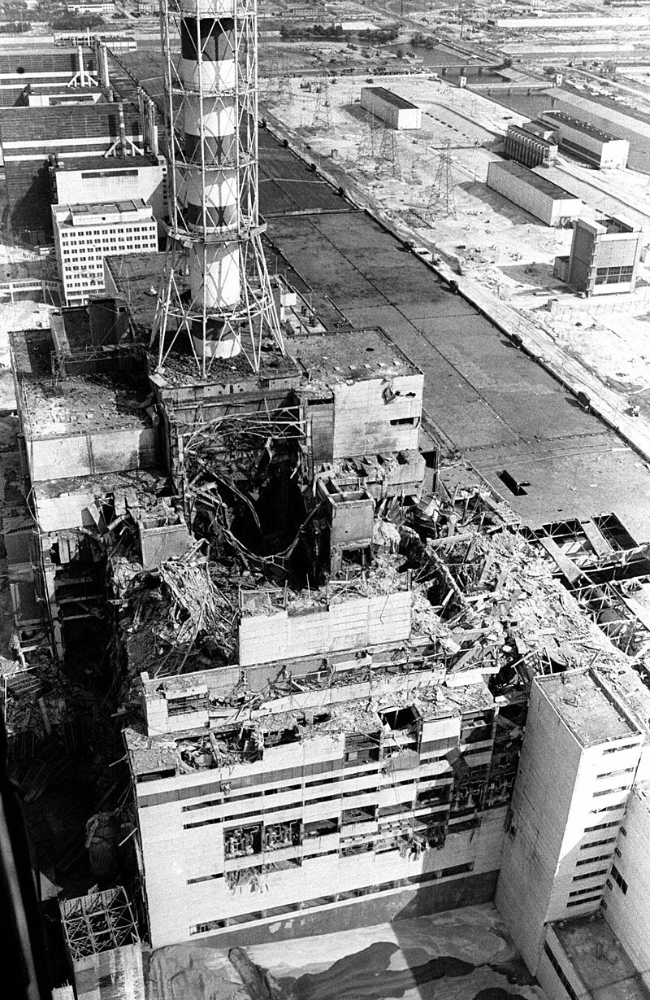

The Chernobyl Disaster
The Chernobyl disaster began on 26 April 1986 with the explosion of the No. 4 reactor of the Chernobyl Nuclear Power Plant near the city of Pripyat in northern Ukraine, near the Belarus border in the Soviet Union. It is one of only two nuclear energy accidents rated at the maximum severity on the International Nuclear Event Scale, the other being the 2011 Fukushima nuclear accident. The response involved more than 500,000 personnel and cost an estimated 18 billion rubles (about $68 billion USD in 2019). It remains the worst nuclear disaster in history and the costliest disaster in human history, with an estimated cost of $700 billion USD.
The disaster occurred while running a test to simulate cooling the reactor during an accident in blackout conditions. The operators carried out the test despite an accidental drop in reactor power, and due to a design issue, attempting to shut down the reactor in those conditions resulted in a dramatic power surge. The reactor components ruptured, lost coolants, and the resulting steam explosions and meltdown destroyed the containment building, followed by a reactor core fire that spread radioactive contaminants across the USSR and Europe. A 10-kilometre (6.2 mi) exclusion zone was established 36 hours after the accident, initially evacuating around 49,000 people. The exclusion zone was later expanded to 30 kilometres (19 mi), resulting in the evacuation of approximately 68,000 more people.
Following the explosion, which killed two engineers and severely burned two others, an emergency operation began to put out the fires and stabilize the reactor. Of the 237 workers hospitalized, 134 showed symptoms of acute radiation syndrome (ARS); 28 of them died within three months. Over the next decade, 14 more workers (nine of whom had ARS) died of various causes mostly unrelated to radiation exposure. It is the only instance in commercial nuclear power history where radiation-related fatalities occurred. As of 2011, 15 childhood thyroid cancer deaths were attributed to the disaster. The United Nations Scientific Committee on the Effects of Atomic Radiation estimates fewer than 100 deaths have resulted from the fallout. Predictions of the eventual total death toll vary; a 2006 World Health Organization study projected 9,000 cancer-related fatalities in Ukraine, Belarus, and Russia.
Pripyat was abandoned and replaced by the purpose-built city of Slavutych. The Chernobyl Nuclear Power Plant sarcophagus, completed in December 1986, reduced the spread of radioactive contamination and provided radiological protection for the crews of the undamaged reactors. In 2016–2018, the Chernobyl New Safe Confinement was constructed around the old sarcophagus to enable the removal of the reactor debris, with clean-up scheduled for completion by 2065.